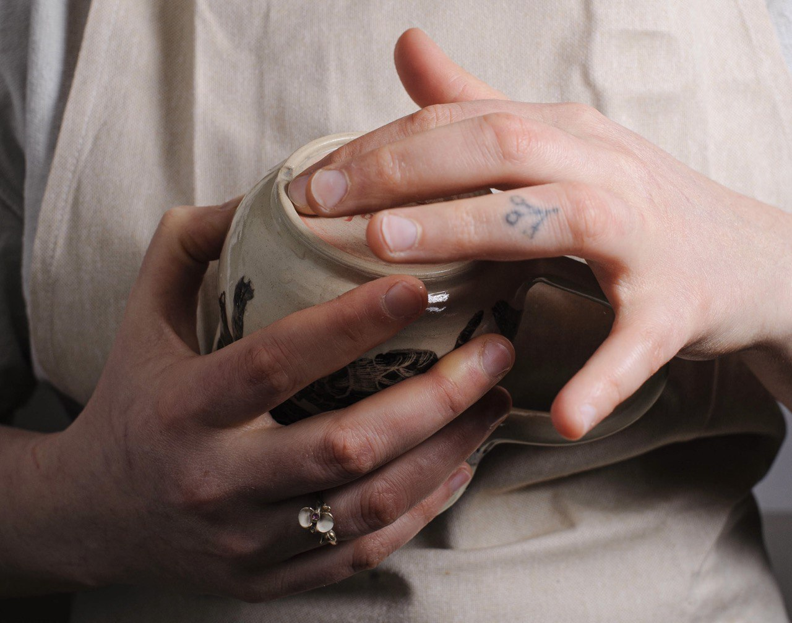

Witamy w Piegus Pottery – miejscu, gdzie pasja do ceramiki łączy się z radością tworzenia. Nasza pracownia w sercu Wrocławia to przestrzeń dla każdego, kto chce odkryć magię gliny i stworzyć coś wyjątkowego.
Warsztaty
Program – Lepienie Ręczne
Warsztaty z gliną – twórczy relaks w kameralnej pracowni Zapraszamy dzieci, młodzież i dorosłych na cykl zajęć z lepienia ręcznego.
- Nauka technik ręcznych – wałkowanie, lepienie z płatów, formowanie z wałeczków, modelowanie.
- Kameralne grupy i indywidualne podejście.
- Wszystkie materiały, narzędzia i wypały w cenie.
- Relaksująca atmosfera i pełna swoboda twórcza.
terminy 2025:
- 🗓️ Warsztaty jednorazowe –, pon-sob (po rezerwacji).
- 🗓️ Cykl zajęć (karnet) – 4 spotkania: 3 lepienia + 1 szkliwienia.
Cena:
- Dla dzieci i młodzieży (4–17 lat) — Karnet: 390 zł, Zajęcia: 100 zł.
- Zajęcia indywidualne — Karnet: 520 zł, Zajęcia: 150 zł .
- Zajęcia grupowe (2–5 osób) — Karnet: 400 zł, Zajęcia: 110 zł.
Szkliwienie ceramiki
Wasze prace z gliny zasługują na to, by zabłysnąć pełnią kolorów!
Dla kogo?
✨ Dla wszystkich, którzy uczestniczyli w zajęciach lepienia ręcznego lub na kole garncarskim i chcą nadać swoim pracom piękne, trwałe barwy.
✨ Dla dzieci od 6 roku życia i dorosłych – bez ograniczeń wiekowych!
Co robimy?
Podczas zajęć poznasz różne techniki szkliwienia:
🎨 malowanie farbami podszkliwnymi
🎨 zanurzanie prac w szkliwie
🎨 mieszanie szkliw i tworzenie własnych, niepowtarzalnych efektów
Twoje prace po wypaleniu staną się wyjątkową, kolorową pamiątką!
Ceny:
🕒 1 godzina – 120 zł
🕒 2 godziny – 150 zł
Twórz, szkliw i baw się kolorami! 🌈✨
Koło garncarskie
Zapraszamy na wyjątkowe, warsztaty z koła garncarskiego! Stwórz własne naczynia, poznaj tajniki garncarstwa i baw się gliną.
- Karnety i ceny promocyjne dla dzieci, indywidualnych uczestników oraz kurs zaawansowany.
Ceny:
- Dla dzieci (6–17 lat) — Karnet: 390 zł, Zajęcia: 110 zł.
- Dla indywidualnych — Karnet: 540 zł, Zajęcia: 150 zł.
- Zaawansowany kurs (8 zajęć) — 1100 zł.
Wypały
W naszej pracowni palimy piec na trzy temperatury: biskwit 950°C, wysoka 1250°C oraz niska 1050°C. Prosimy o sprawdzenie specyfiki swoich mas ceramicznych i szkliw oraz informację na jaką temperaturę mają być wypalone przed pozostawieniem ich u nas. Po zostawieniu prac wypalamy je w dwa tygodnie, w przypadku zbliżających się dużych targów ten czas może się wydłużyć.
Cennik wypałów
| Rodzaj | Cena |
|---|---|
| Biskwit kg | 20 zł |
| Wysoka kg | 40 zł |
| Niska kg | 30 zł |
| Cały piec biskwit 80l | 250 zł |
| Cały piec wysoka 80l | 350 zł |
| Cały piec biskwit 300l | 550 zł |
| Cały piec wysoka 300l | 700 zł |
Dodatkowe usługi
| Rodzaj | Cena |
|---|---|
| Cały piec temp. indywidualna 80l | 350 zł |
| Cały piec temp. indywidualna 300l | 550 zł |
| Suszenie prac w piecu biskwit | 50 zł |
| Własna krzywa wypału cały piec | +50 zł |
Naliczane koszty
| Rodzaj | Cena |
|---|---|
| Czyszczenie półki | 70 zł |
| Zniszczenia elementów pieca | Cena według serwisu |
Regulamin wypałów
- Prace przynoszone do wypału muszą być pozbawione szkliwa w miejscu styku z płytą pieca.
- W przypadku szkliw płynących praca musi być odszkliwiona odpowiednio wyżej.
- Jeżeli prace wymagają podkładki lub stojaka (np. na korale), są ważone przed wypałem wraz z nią. Zachęcamy do korzystania z własnych podkładek.
- W przypadku zabrudzenia półki szkliwem naliczamy koszt usługi czyszczenia w wysokości 70 zł.
- Jeżeli półka pieca zostanie zniszczona w sposób uniemożliwiający jej wyczyszczenie lub po wyczyszczeniu nie będzie nadawała się do dalszego użytkowania, wówczas naliczamy koszt kupna całej półki.
- W przypadku uszkodzenia pieca – naliczamy koszt naprawy wg ceny specjalisty.
- Jeżeli w trakcie wypału dojdzie do zniszczenia pracy, pracownia nie bierze za to odpowiedzialności.
- Przynosząc prace do wypału komercyjnego, akceptujesz powyższy regulamin.
Galeria zdjęć
Vouchery
W naszej pracowni można zakupić vouchery i karty podarunkowe na zajęcia i spersonalizowany kubeczek. Zamówienia na inne wyroby ceramiczne również są przyjmowane. Wystarczy skontaktować się z nami przez email lub telefonicznie.
Kontakt
Masz pytania? Skontaktuj się z nami:
- Email: piegus.pottery@outlook.com
- Instagram: @piegus_pottery
- Facebook: Piegus Pottery
- Telefon: +48 572 358 906
Pracownia Piegus Pottery, ul. Bartosza Głowackiego 20, Wrocław